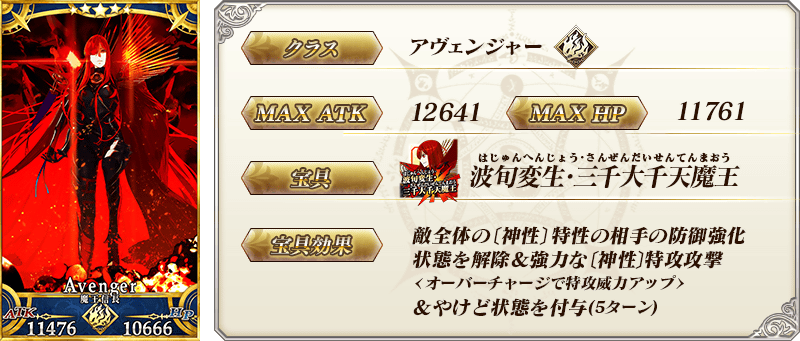
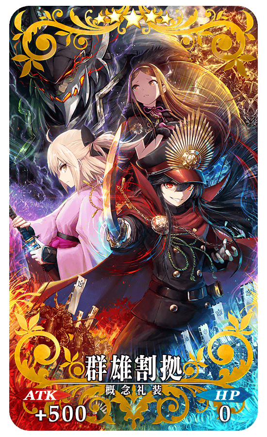
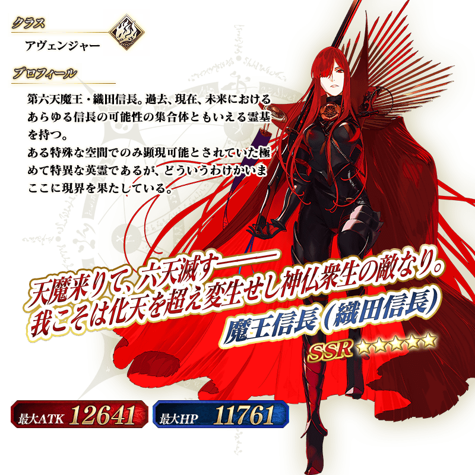
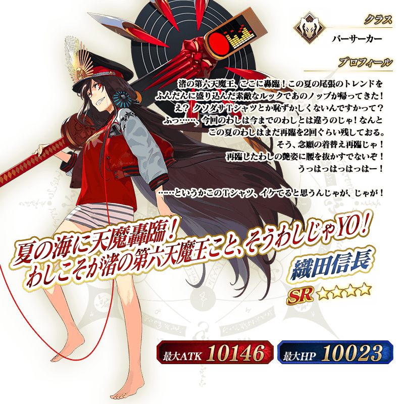
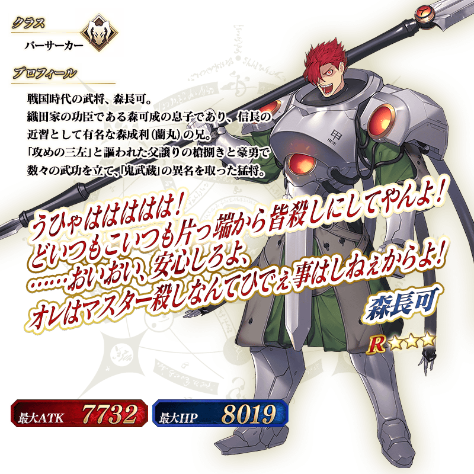

◆「GUDAGUDA Final本能寺2019Pick Up召喚」期間◆
期間:2019年7月4日(四) 17:00～7月18日(四) 11:59
舉辦期間限定「GUDAGUDA Final本能寺2019Pick Up召喚」！
於期間限定活動「All信長總進擊 GUDAGUDA Final本能寺2019」活躍的期間限定從者「★5(SSR)魔王信長(織田信長)」「★3(R)森長可」新登場！
並且「★4(SR)織田信長(Berserker)」也以期間限定登場！
這次Pick Up上述3位從者！
詳情請在聖晶石召喚畫面左下的召喚詳細確認。
「★5(SSR)群雄割拠」「★4(SR)軍神」「★3(R)鬼の茶会」做為期間限定概念禮裝登場！
裝備上述3種概念禮裝的話，在期間限定活動「All信長總進擊 GUDAGUDA Final本能寺2019」中會提升活動道具的掉落獲得數。
◆有關從者的注意◆
※「★5(SSR)織田信長」靈基再臨到第3階段的話名稱會變成「★5(SSR)魔王信長」。
※「★5(SSR)魔王信長(織田信長)」「★4(SR)織田信長(Berserker)」「★3(R)森長可」在Pick Up期間結束後不會追加到故事召喚。
※請注意「★3(R)森長可」不會從友情點數召喚會被抽出。
◆有關概念禮裝的注意◆
【7月15日(一) 17:00修正】
※「★3(R)鬼の茶会」在Pick Up期間中2019年7月17日(三) 11:59前的期間，也能靠友情點數召喚獲得。
※請注意自友情點數召喚抽出的「★3(R)鬼の茶会」在自動變還設定登錄★3(R)概念禮裝的情況，會變成自動變還的對象。
Pick Up期間中，期間限定從者、期間限定概念禮裝的出現機率提升！
10次召喚中確定1張★4(SR)以上和確定1位★3(R)以上的從者！
※確定★4(SR)以上包含從者和概念禮裝。
※本頁面皆為開發中圖片。會有與實際圖片相異的情況。
 ※上述「★5(SSR)魔王信長(織田信長)」的卡面為靈基再臨第3階段。 ※「★5(SSR)織田信長」靈基再臨到第3階段的話名稱會變成「★5(SSR)魔王信長」。


|  |
★★★★★SSR |

|
★★★★SR
|


|
★★★R |
 ※上述「★5(SSR)魔王信長(織田信長)」的立繪為靈基再臨第3階段。 ※「★5(SSR)織田信長」靈基再臨到第3階段的話名稱會變成「★5(SSR)魔王信長」。


介紹「★5(SSR)魔王信長(織田信長)」「★4(SR)織田信長(Berserker)」「★3(R)森長可」的寶具演出！
在「Fate/Grand Order」官方網站內的公告中，以影片公開寶具演出，敬請確認。
其他還有，期間限定活動「All信長總進擊 GUDAGUDA Final本能寺2019」同時舉辦！
並且，経験値的官方支援漫畫「Fate/GUDAGUDA Order」以期間限定再一次復活了！
關於詳情，請自下述橫幅確認。
■「All信長總進擊 GUDAGUDA Final本能寺2019」詳細情報

■「Fate/GUDAGUDA Order」